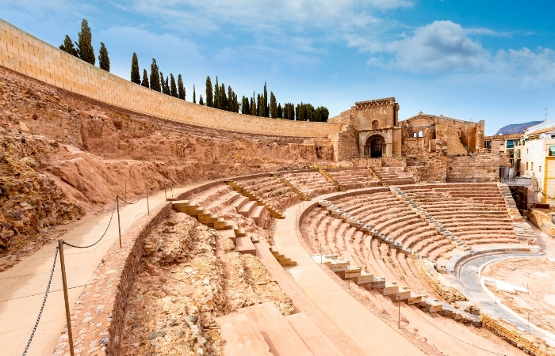

Descripcion
Siguiendo la profunda huella que dejaron los romanos en esta ciudad llegarás al impresionante Teatro Romano, construido entre los años 5 y 1 a.C y uno de los lugares que visitar en Cartagena imprescindibles. Aunque el teatro se puede ver desde el Parque de la Cornisa, es muy recomendable entrar por el Palacio de Riquelme, situado en la Plaza del Ayuntamiento, que junto a la antigua iglesia de Santa María la Vieja, componen un fantástico museo que te ayudará a conocer mejor la historia de este monumento y la ciudad, además de poder ver todas las piezas encontradas durante diferentes excavaciones. Después de recorrer un pasillo que discurre por el subsuelo de la ciudad con restos arqueológicos entrarás en el imponente Teatro Romano, que tenía capacidad para unos 7000 espectadores y fue descubierto por el arqueólogo Sebastián Ramallo Asensio en 1988. Puedes reservar la entrada con antelación desde esta página.
